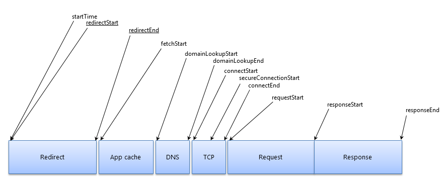

Third-Party Content
The weak link in your chain?
#perfmatters conf 2018
SRIOther metaphors...
🤱 Parasites
Other metaphors...
🧟‍♂️ Parasites
📉 Those stocks...
🤦‍♀️ That person at all the parties...
The 'chain'
todo?
AMP got something right 🤪
TODO: AMP waterfall screenshot from tkadlec's post
What i've learned in 5 years
we seem to have less control than ever
The "business" 👩‍✈️
The money 💵
“We know that Optimizely slows down the site, but it will get us $750k increased revenue this year”
Holiday website, UK
The it's not my job 🤷‍♀️
“We suspect it slows the site down, we haven’t tested it. Marketing says it’s critical to their latest TV campaign so there’s no point arguing”
Budget airline, UK
The tag manager 🕴
“They've got access to the tag manager, there's nothing we can do now.”
Clicks-and-mortar store, UK
Risk
🎲(ps: Availability Bias) 🤔
- Remember when Facebook went down?
- Remember when Disqus went down?
- Remember when Maxymiser went down?
- Remember when Dyn went down?
Malicious code injection 👹
Coinhive 😈
P*ssed employees 🤬
Internet 'Service' Providers
Content Delivery Networks
Availability 📉
Do they fail gracefully?
TODO: +ve e.g. twitter cards
TODO: -ve e.g. ??
Are they using a CDN?
Is it as good as yours?
TODO: e.g. optimix.asia on akamai
What is their SLA for availability?
Is it as good as yours?
TODO: are there any public slas?
Code Quality ğŸ”
Different release schedules
Polluting the global scope
Spamming the console log
Just plain thoughtless
TODO: look at cvazac's deck for more
Performance 🚀
Self-policing isn't good enough
... the X Web Reference Snippet was available ... and the download time over HTTP did not exceed 500 ms.
Snippet is sampled every minute from a variety of U.S. locations.
status.optimizely.com
The web is variable
(and so are third-parties
Andy's distributions here
The web is variable
(and so are third-parties
TODO: Analysis from lambda_rt here
lambda_rt
Resource Timing to the rescue!
https://www.w3.org/TR/resource-timing-1/
Resource Timing to the rescue?
not without Timing-Allow-Origin 🙈

https://www.w3.org/TR/resource-timing-1/
Resource Timing won't save us
🙈 no redirect information
🙈 limited data on 72% of third-party content
developer.akamai.com/blog/2017/07/26/measuring-performance-third-party-contributors/
Performance 🚀
(for real this time)
CPU is our biggest bottleneck ⏳
Who's policing the third-parties?
TODO: Andy's third party distributions
TODO: CPU abuser
Who watches the watchmen?
TODO: Boomerang perf analysis
Performance 🚀
(part III)
delaying onload
TODO: replay optimix.asia example?
filling the dns buffer
keeping the radio awake
TODO: example of never-ending pings (livechat?)
We have little control over which are used
But there are things we can do...
Find out what's there
Synthetic Testing (webpagetest)
Request Maps
TODO: insert live requestmap?
github.com/simonhearne/requestmap/ | requestmap.webperf.tools
Bonus: Third-party categorization
TODO: finish the db!!!?
github.com/simonhearne/thirdpartydb | thirdpartydb.appspot.com
Determine the impact
Synthetic Testing (webpagetest)
TODO: video spof / block testing
Synthetic Testing (made easy)
TODO: third-party-impact
Resource Impact from RUM
TODO: add RIS video
Advertising Partners
TODO: add RIS results for mailonline / similar
Analytics
TODO: add RIS results for analytics
Multivariate Testing / 'Optimization'
TODO: add RIS results for optimizely
Bonus: determine the value!
TODO: optimizely (almost) got me fired etc.
"Everything should have a value,
because everything has a cost"
Tim Kadlec - freelance #webperf god
Measure them and Report on them
Content Security Policy 👮‍♀️
(report-only)
Browsers (and report-uri.io have done the hard work for us!
Synthetic Testing 🤖
TODO: synthetic tests with good third-party analysis
RUM 🥃
The best way to monitor resources, even with its limitations
🥃 Waterfalls
TODO: aggregate waterfall video
Defend ourselves 🤼‍♀️
Content Security Policy 👮‍♀️
Sub-resource Integrity ğŸ”
href="//maxcdn.bootstrapcdn.com/.../bootstrap.min.css"
integrity="
sha256-8EtRe6XWoFEEhWiaPkLaw...=
sha512-/5KWJw2mvMO2ZM5fndVxU...=
"
crossorigin="anonymous"/>
Service Worker 🧚‍♀️
Self-hosting / Proxying ☔️
Have a third-party policy 💼
- What does it do
- Who owns it
- Who uses the data
- How much is it worth
- What’s the impact on the site
- How do you remove it
Share with other teams! 🗣
TODO: dashboards, scorecards etc.
-Conclusion
Third-party content may be a weak link
But it's here to stay
Four things we can do to help:
Know what's there
- ...
Know the impact
- ...
Measure them
- ...
Have a solid defense
- ...
Share data with other teams!
Thank you,
good luck!
🚴‍♂️ Simon Hearne
🛠webperf.ninja/tools
🖥 simonhearne.github.io/weak-links
@SimonHearne